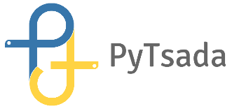

Communities¶
The Phillipines has many Python community groups, distributed among different regions of the country.

Python.PH¶
Python.PH is a community in the Philippines for enthusiasts and users of the Python programming language. Our aim is to show that Python has something for everyone: from hobbyists, to educators, to professionals.
The group started back in 2007 when Jun Auza of Tech Source blogged about forming a local Python User’s Group. JM Maranan stumbled upon the post and created a Google group.
In June 31-July 1 2012, we held the first ever PyCon Philippines. Today, we continue to organize the yearly PyCon and monthly meet-ups for knowledge sharing and some pizza.

PizzaPy¶
PizzaPy started out as two fat bearded guys meeting up for pizza and beer to talk about Python and technology. They thought it was a good idea to invite other people and make companies pay for their pizza and beer.

waterPy¶
WaterPy is a community of enthusiasts committed to promote Python, its associated technologies and practices in Region X. And to collaborate with existing Pythonistas in the region, throughout Philippines and the world. Learn and enjoy python together

DurianPy¶
Davao’s Python Community – where Pythonistas and enthusiasts gather to discuss trends and share knowledge about the IT industry over a pack of Durian candies (not always). Fresh talks and friendly conversations, guaranteed!
{kind=link}
PyTsada¶
ITG-PyTsada or simply “PyTsada” is a group for sharing Python and Python-related stuff, organizing meetups, events, promotion of Python in education, among others, here in Cagayan de Oro City and nearby areas.
It is a focus group or subgroup of the CDO Information Technology Group or ITG-X, which is a larger group of IT enthusiasts, hobbyists, hackers, and professionals in CDO.

PyLadies Manila¶
PyLadies Manila is a group of women developers based in Manila who love the Python programming language.
The group started back in November 2014 with less than 10 girls meeting for coffee. From then on, they started to organize events to advocate Women In Tech such as Python For The Curious Code Lab and Django Girls Manila. Some of their slides are up here
Anyone who is interested in Python is encouraged to participate!

SugarPy¶
SugarPy is a group of Python programming language enthusiasts in Dumaguete and Negros island area.
Community Panel¶
We have gathered representatives from Python.PH, PizzaPy, PyTsada, DurianPy, SugarPy, WaterPy, and PyLadies Manila on this panel. They will share their experiences in starting their groups, their events, their community, and tips on how to start a community group.
Moderator: Mark Steve Samson

July 4-5, 2015
Leong Hall Auditorium
Ateneo de Manila University, Quezon City